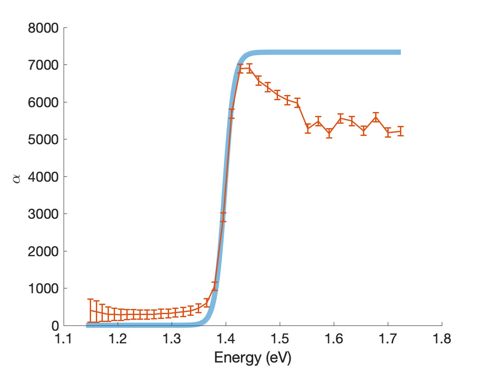

January - May 2022
In my Data Science portfolio, I feature an innovative project where automation meets semiconductor analysis. Using Python and MATLAB, I developed an intuitive app that automates the analysis of optical absorption in semiconductors, focusing on determining the energy band gap—a critical factor for semiconductor applications. What sets this project apart is the incorporation of the sigmoid-Boltzmann data model, a novel approach for accurately pinpointing semiconductor band gaps. This innovative model was integrated into the app, providing a unique and efficient method for analysis.
The app's automation streamlines the entire process, allowing for quick and precise analysis without manual intervention. By applying this automated approach to a GaAs wafer, I demonstrated the system's accuracy and efficiency in determining the band gap. This project showcases my expertise in both coding and innovative data modeling techniques, offering a practical solution for semiconductor analysis in real-world applications.
See more in my GitHub here
Novel sigmoid plot
Interactive Tauc plotting app
Download formal report here